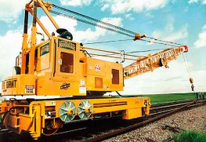
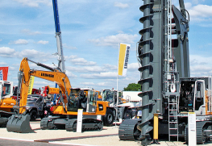
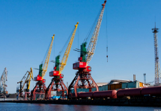

<div class="wrapper bord"><!--Gros 15:37:48--> 


  
<div class="news"><div class="contain"><div class="news-cat-w" style="margin-bottom: 40px;"><ul class="news-cat-ul" style="display: flex;"><li class="news-cat-li" style="margin-right: 10px;"><a class="news-cat-a-act" style="font-weight: bold; font-size: 13px; color: rgb(231, 50, 55); display: inline-flex; border: 1px solid rgb(231, 50, 55); padding-left: 10px; padding-right: 10px; height: 30px; align-items: center; justify-content: center;">Все</a></li><li class="news-cat-li" style="margin-right: 10px; "><a class="news-cat-a" style="font-weight: bold; font-size: 13px; color: rgb(0, 0, 0); padding-left: 10px; padding-right: 10px; height: 30px; align-items: center; justify-content: center; border: 1px solid rgb(232, 232, 232); display: inline-flex;">Новости отрасли</a></li><li class="news-cat-li" style="margin-right: 10px; "><a class="news-cat-a" style="font-weight: bold; font-size: 13px; color: rgb(0, 0, 0); padding-left: 10px; padding-right: 10px; height: 30px; align-items: center; justify-content: center; border: 1px solid rgb(232, 232, 232); display: inline-flex;">Автокраны</a></li><li class="news-cat-li" style="margin-right: 10px; "><a class="news-cat-a" style="font-weight: bold; font-size: 13px; color: rgb(0, 0, 0); padding-left: 10px; padding-right: 10px; height: 30px; align-items: center; justify-content: center; border: 1px solid rgb(232, 232, 232); display: inline-flex;">События</a></li><li class="news-cat-li" style="margin-right: 10px; "><a class="news-cat-a" style="font-weight: bold; font-size: 13px; color: rgb(0, 0, 0); padding-left: 10px; padding-right: 10px; height: 30px; align-items: center; justify-content: center; border: 1px solid rgb(232, 232, 232); display: inline-flex;">Новости отрасли</a></li><li class="news-cat-li" style="margin-right: 10px; "><a class="news-cat-a" style="font-weight: bold; font-size: 13px; color: rgb(0, 0, 0); padding-left: 10px; padding-right: 10px; height: 30px; align-items: center; justify-content: center; border: 1px solid rgb(232, 232, 232); display: inline-flex;">Автокраны</a></li></ul></div><div class="news-arts"><div class="news-art" style="display: flex; margin-bottom: 8px;"><div class="news-art-img-w" style="width: 263px; height: 181px; display: flex; align-items: center; justify-content: center;"></div><div class="news-art-desc" style="background: rgb(249, 249, 249); padding: 35px;"><div class="news-art-desc-w"><a class="news-art-desc-top" style="font-weight: 600; font-size: 15px; color: rgb(0, 0, 0); display: block; margin-bottom: 12px;">Классификация кранов на железнодорожном ходу</a><div class="news-art-desc-txt" style="font-size: 13px; line-height: 1.2; color: rgb(0, 0, 0); margin-bottom: 12px;">Как правило, грузы перемещаются на малые расстояния. Этот вид техники бывает передвижным и стационарным. На некоторые виды можно оформить заказ услуги автокрана. Всего существует три группы кранов.</div><div class="news-art-desc-row" style="display: flex; align-items: center;"><div class="news-art-desc-date" style="display: inline-flex; align-items: center; justify-content: flex-start; padding-left: 1px; font-weight: 500; font-size: 11px; color: rgb(156, 156, 156); margin-right: 20px;"><span class="news-art-date-span" style="background-image: url(&quot;result/img/calend.svg&quot;); background-repeat: no-repeat; background-position: center center; width: 11px; height: 10px; display: block; margin-right: 7px;"></span> 25 сентября 2021</div><a class="news-art-desc-a" style="font-weight: 600; font-size: 11px; color: rgb(156, 156, 156); display: inline-flex; padding-left: 7px; padding-right: 7px; height: 21px; align-items: center; justify-content: center;
border: 1px solid #E8E8E8;">Новости отрасли</a></div></div></div></div><div class="news-art" style="display: flex; margin-bottom: 8px;"><div class="news-art-img-w" style="width: 263px; height: 181px; display: flex; align-items: center; justify-content: center;"></div><div class="news-art-desc" style="background: rgb(249, 249, 249); padding: 35px;"><div class="news-art-desc-w"><a class="news-art-desc-top" style="font-weight: 600; font-size: 15px; color: rgb(0, 0, 0); display: block; margin-bottom: 12px;">Береговые краны</a><div class="news-art-desc-txt" style="font-size: 13px; line-height: 1.2; color: rgb(0, 0, 0); margin-bottom: 12px;">Но в крупных городах даже таких кранов нехватает и поэтому используется, к примеру, аренда автокрана в Москве. Такие требования обуславливаются спецификой строительства, при котором сооружаются причалы блоков и молы, масса которых иногда достигает 50 т.</div><div class="news-art-desc-row" style="display: flex; align-items: center;"><div class="news-art-desc-date" style="display: inline-flex; align-items: center; justify-content: flex-start; padding-left: 1px; font-weight: 500; font-size: 11px; color: rgb(156, 156, 156); margin-right: 20px;"><span class="news-art-date-span" style="background-image: url(&quot;result/img/calend.svg&quot;); background-repeat: no-repeat; background-position: center center; width: 11px; height: 10px; display: block; margin-right: 7px;"></span> 22 сентября 2021</div><a class="news-art-desc-a" style="font-weight: 600; font-size: 11px; color: rgb(156, 156, 156); display: inline-flex; padding-left: 7px; padding-right: 7px; height: 21px; align-items: center; justify-content: center;
border: 1px solid #E8E8E8;">Автокраны</a></div></div></div></div><div class="news-art" style="display: flex; margin-bottom: 8px;"><div class="news-art-img-w" style="width: 263px; height: 181px; display: flex; align-items: center; justify-content: center;"></div><div class="news-art-desc" style="background: rgb(249, 249, 249); padding: 35px;"><div class="news-art-desc-w"><a class="news-art-desc-top-act" style="font-weight: 600; font-size: 15px; color: #E73237; display: block; margin-bottom: 12px;">Дорожно-строительная техника</a><div class="news-art-desc-txt" style="font-size: 13px; line-height: 1.2; color: rgb(0, 0, 0); margin-bottom: 12px;">Но в крупных городах даже таких кранов нехватает и поэтому используется, к примеру, аренда автокрана в Москве. Такие требования обуславливаются спецификой строительства, при котором сооружаются причалы блоков и молы, масса которых иногда достигает 50 т.</div><div class="news-art-desc-row" style="display: flex; align-items: center;"><div class="news-art-desc-date" style="display: inline-flex; align-items: center; justify-content: flex-start; padding-left: 1px; font-weight: 500; font-size: 11px; color: rgb(156, 156, 156); margin-right: 20px;"><span class="news-art-date-span" style="background-image: url(&quot;result/img/calend.svg&quot;); background-repeat: no-repeat; background-position: center center; width: 11px; height: 10px; display: block; margin-right: 7px;"></span> 17 сентября 2021</div><a class="news-art-desc-a" style="font-weight: 600; font-size: 11px; color: rgb(156, 156, 156); display: inline-flex; padding-left: 7px; padding-right: 7px; height: 21px; align-items: center; justify-content: center;
border: 1px solid #E8E8E8;">События</a></div></div></div></div><div class="news-art" style="display: flex; margin-bottom: 8px;"><div class="news-art-img-w" style="width: 263px; height: 181px; display: flex; align-items: center; justify-content: center;"></div><div class="news-art-desc" style="background: rgb(249, 249, 249); padding: 35px;"><div class="news-art-desc-w"><a class="news-art-desc-top" style="font-weight: 600; font-size: 15px; color: rgb(0, 0, 0); display: block; margin-bottom: 12px;">Классификация кранов на железнодорожном ходу</a><div class="news-art-desc-txt" style="font-size: 13px; line-height: 1.2; color: rgb(0, 0, 0); margin-bottom: 12px;">Как правило, грузы перемещаются на малые расстояния. Этот вид техники бывает передвижным и стационарным. На некоторые виды можно оформить заказ услуги автокрана. Всего существует три группы кранов.</div><div class="news-art-desc-row" style="display: flex; align-items: center;"><div class="news-art-desc-date" style="display: inline-flex; align-items: center; justify-content: flex-start; padding-left: 1px; font-weight: 500; font-size: 11px; color: rgb(156, 156, 156); margin-right: 20px;"><span class="news-art-date-span" style="background-image: url(&quot;result/img/calend.svg&quot;); background-repeat: no-repeat; background-position: center center; width: 11px; height: 10px; display: block; margin-right: 7px;"></span> 25 сентября 2021</div><a class="news-art-desc-a" style="font-weight: 600; font-size: 11px; color: rgb(156, 156, 156); display: inline-flex; padding-left: 7px; padding-right: 7px; height: 21px; align-items: center; justify-content: center;
border: 1px solid #E8E8E8;">Новости отрасли</a></div></div></div></div><div class="news-art" style="display: flex; margin-bottom: 8px;"><div class="news-art-img-w" style="width: 263px; height: 181px; display: flex; align-items: center; justify-content: center;"></div><div class="news-art-desc" style="background: rgb(249, 249, 249); padding: 35px;"><div class="news-art-desc-w"><a class="news-art-desc-top" style="font-weight: 600; font-size: 15px; color: rgb(0, 0, 0); display: block; margin-bottom: 12px;">Береговые краны</a><div class="news-art-desc-txt" style="font-size: 13px; line-height: 1.2; color: rgb(0, 0, 0); margin-bottom: 12px;">Но в крупных городах даже таких кранов нехватает и поэтому используется, к примеру, аренда автокрана в Москве. Такие требования обуславливаются спецификой строительства, при котором сооружаются причалы блоков и молы, масса которых иногда достигает 50 т.</div><div class="news-art-desc-row" style="display: flex; align-items: center;"><div class="news-art-desc-date" style="display: inline-flex; align-items: center; justify-content: flex-start; padding-left: 1px; font-weight: 500; font-size: 11px; color: rgb(156, 156, 156); margin-right: 20px;"><span class="news-art-date-span" style="background-image: url(&quot;result/img/calend.svg&quot;); background-repeat: no-repeat; background-position: center center; width: 11px; height: 10px; display: block; margin-right: 7px;"></span> 22 сентября 2021</div><a class="news-art-desc-a" style="font-weight: 600; font-size: 11px; color: rgb(156, 156, 156); display: inline-flex; padding-left: 7px; padding-right: 7px; height: 21px; align-items: center; justify-content: center;
border: 1px solid #E8E8E8;">Автокраны</a></div></div></div></div><div class="news-art" style="display: flex; margin-bottom: 8px;"><div class="news-art-img-w" style="width: 263px; height: 181px; display: flex; align-items: center; justify-content: center;"></div><div class="news-art-desc" style="background: rgb(249, 249, 249); padding: 35px;"><div class="news-art-desc-w"><a class="news-art-desc-top" style="font-weight: 600; font-size: 15px; color: rgb(0, 0, 0); display: block; margin-bottom: 12px;">Дорожно-строительная техника</a><div class="news-art-desc-txt" style="font-size: 13px; line-height: 1.2; color: rgb(0, 0, 0); margin-bottom: 12px;">Но в крупных городах даже таких кранов нехватает и поэтому используется, к примеру, аренда автокрана в Москве. Такие требования обуславливаются спецификой строительства, при котором сооружаются причалы блоков и молы, масса которых иногда достигает 50 т.</div><div class="news-art-desc-row" style="display: flex; align-items: center;"><div class="news-art-desc-date" style="display: inline-flex; align-items: center; justify-content: flex-start; padding-left: 1px; font-weight: 500; font-size: 11px; color: rgb(156, 156, 156); margin-right: 20px;"><span class="news-art-date-span" style="background-image: url(&quot;result/img/calend.svg&quot;); background-repeat: no-repeat; background-position: center center; width: 11px; height: 10px; display: block; margin-right: 7px;"></span> 17 сентября 2021</div><a class="news-art-desc-a" style="font-weight: 600; font-size: 11px; color: rgb(156, 156, 156); display: inline-flex; padding-left: 7px; padding-right: 7px; height: 21px; align-items: center; justify-content: center;
border: 1px solid #E8E8E8;">События</a></div></div></div></div><div class="news-art" style="display: flex; margin-bottom: 8px;"><div class="news-art-img-w" style="width: 263px; height: 181px; display: flex; align-items: center; justify-content: center;"></div><div class="news-art-desc" style="background: rgb(249, 249, 249); padding: 35px;"><div class="news-art-desc-w"><a class="news-art-desc-top" style="font-weight: 600; font-size: 15px; color: rgb(0, 0, 0); display: block; margin-bottom: 12px;">Классификация кранов на железнодорожном ходу</a><div class="news-art-desc-txt" style="font-size: 13px; line-height: 1.2; color: rgb(0, 0, 0); margin-bottom: 12px;">Как правило, грузы перемещаются на малые расстояния. Этот вид техники бывает передвижным и стационарным. На некоторые виды можно оформить заказ услуги автокрана. Всего существует три группы кранов.</div><div class="news-art-desc-row" style="display: flex; align-items: center;"><div class="news-art-desc-date" style="display: inline-flex; align-items: center; justify-content: flex-start; padding-left: 1px; font-weight: 500; font-size: 11px; color: rgb(156, 156, 156); margin-right: 20px;"><span class="news-art-date-span" style="background-image: url(&quot;result/img/calend.svg&quot;); background-repeat: no-repeat; background-position: center center; width: 11px; height: 10px; display: block; margin-right: 7px;"></span> 25 сентября 2021</div><a class="news-art-desc-a" style="font-weight: 600; font-size: 11px; color: rgb(156, 156, 156); display: inline-flex; padding-left: 7px; padding-right: 7px; height: 21px; align-items: center; justify-content: center;
border: 1px solid #E8E8E8;">Новости отрасли</a></div></div></div></div><div class="news-art" style="display: flex; margin-bottom: 8px;"><div class="news-art-img-w" style="width: 263px; height: 181px; display: flex; align-items: center; justify-content: center;"></div><div class="news-art-desc" style="background: rgb(249, 249, 249); padding: 35px;"><div class="news-art-desc-w"><a class="news-art-desc-top" style="font-weight: 600; font-size: 15px; color: rgb(0, 0, 0); display: block; margin-bottom: 12px;">Береговые краны</a><div class="news-art-desc-txt" style="font-size: 13px; line-height: 1.2; color: rgb(0, 0, 0); margin-bottom: 12px;">Но в крупных городах даже таких кранов нехватает и поэтому используется, к примеру, аренда автокрана в Москве. Такие требования обуславливаются спецификой строительства, при котором сооружаются причалы блоков и молы, масса которых иногда достигает 50 т.</div><div class="news-art-desc-row" style="display: flex; align-items: center;"><div class="news-art-desc-date" style="display: inline-flex; align-items: center; justify-content: flex-start; padding-left: 1px; font-weight: 500; font-size: 11px; color: rgb(156, 156, 156); margin-right: 20px;"><span class="news-art-date-span" style="background-image: url(&quot;result/img/calend.svg&quot;); background-repeat: no-repeat; background-position: center center; width: 11px; height: 10px; display: block; margin-right: 7px;"></span> 22 сентября 2021</div><a class="news-art-desc-a" style="font-weight: 600; font-size: 11px; color: rgb(156, 156, 156); display: inline-flex; padding-left: 7px; padding-right: 7px; height: 21px; align-items: center; justify-content: center;
border: 1px solid #E8E8E8;">Автокраны</a></div></div></div></div><div class="news-art" style="display: flex; margin-bottom: 8px;"><div class="news-art-img-w" style="width: 263px; height: 181px; display: flex; align-items: center; justify-content: center;"></div><div class="news-art-desc" style="background: rgb(249, 249, 249); padding: 35px;"><div class="news-art-desc-w"><a class="news-art-desc-top" style="font-weight: 600; font-size: 15px; color: rgb(0, 0, 0); display: block; margin-bottom: 12px;">Дорожно-строительная техника</a><div class="news-art-desc-txt" style="font-size: 13px; line-height: 1.2; color: rgb(0, 0, 0); margin-bottom: 12px;">Но в крупных городах даже таких кранов нехватает и поэтому используется, к примеру, аренда автокрана в Москве. Такие требования обуславливаются спецификой строительства, при котором сооружаются причалы блоков и молы, масса которых иногда достигает 50 т.</div><div class="news-art-desc-row" style="display: flex; align-items: center;"><div class="news-art-desc-date" style="display: inline-flex; align-items: center; justify-content: flex-start; padding-left: 1px; font-weight: 500; font-size: 11px; color: rgb(156, 156, 156); margin-right: 20px;"><span class="news-art-date-span" style="background-image: url(&quot;result/img/calend.svg&quot;); background-repeat: no-repeat; background-position: center center; width: 11px; height: 10px; display: block; margin-right: 7px;"></span> 17 сентября 2021</div><a class="news-art-desc-a" style="font-weight: 600; font-size: 11px; color: rgb(156, 156, 156); display: inline-flex; padding-left: 7px; padding-right: 7px; height: 21px; align-items: center; justify-content: center;
border: 1px solid #E8E8E8;">События</a></div></div></div></div><div class="news-art" style="display: flex; margin-bottom: 8px;"><div class="news-art-img-w" style="width: 263px; height: 181px; display: flex; align-items: center; justify-content: center;"></div><div class="news-art-desc" style="background: rgb(249, 249, 249); padding: 35px;"><div class="news-art-desc-w"><a class="news-art-desc-top" style="font-weight: 600; font-size: 15px; color: rgb(0, 0, 0); display: block; margin-bottom: 12px;">Классификация кранов на железнодорожном ходу</a><div class="news-art-desc-txt" style="font-size: 13px; line-height: 1.2; color: rgb(0, 0, 0); margin-bottom: 12px;">Как правило, грузы перемещаются на малые расстояния. Этот вид техники бывает передвижным и стационарным. На некоторые виды можно оформить заказ услуги автокрана. Всего существует три группы кранов.</div><div class="news-art-desc-row" style="display: flex; align-items: center;"><div class="news-art-desc-date" style="display: inline-flex; align-items: center; justify-content: flex-start; padding-left: 1px; font-weight: 500; font-size: 11px; color: rgb(156, 156, 156); margin-right: 20px;"><span class="news-art-date-span" style="background-image: url(&quot;result/img/calend.svg&quot;); background-repeat: no-repeat; background-position: center center; width: 11px; height: 10px; display: block; margin-right: 7px;"></span> 25 сентября 2021</div><a class="news-art-desc-a" style="font-weight: 600; font-size: 11px; color: rgb(156, 156, 156); display: inline-flex; padding-left: 7px; padding-right: 7px; height: 21px; align-items: center; justify-content: center;
border: 1px solid #E8E8E8;">Новости отрасли</a></div></div></div></div></div></div></div></div>